Code
data = pd.read_csv("C:/Users/Nastaran/Desktop/UniversityConstructor/semester3/Vitualization/FinalProject/DataStory_UniversityRanking/data/WDI2023_Data.csv")data = pd.read_csv("C:/Users/Nastaran/Desktop/UniversityConstructor/semester3/Vitualization/FinalProject/DataStory_UniversityRanking/data/WDI2023_Data.csv")data.head(10)| Country Name | Country Code | Series Name | Series Code | 2023 [YR2023] | |
|---|---|---|---|---|---|
| 0 | Albania | ALB | GDP (current US$) | NY.GDP.MKTP.CD | 22977677861 |
| 1 | Albania | ALB | GDP growth (annual %) | NY.GDP.MKTP.KD.ZG | 3.439149499 |
| 2 | Albania | ALB | GDP per capita (current US$) | NY.GDP.PCAP.CD | 8367.775731 |
| 3 | Albania | ALB | Research and development expenditure (% of GDP) | GB.XPD.RSDV.GD.ZS | .. |
| 4 | Albania | ALB | Population, total | SP.POP.TOTL | 2745972 |
| 5 | Albania | ALB | Urban population (% of total population) | SP.URB.TOTL.IN.ZS | 64.603 |
| 6 | Albania | ALB | Government expenditure on education, total (% ... | SE.XPD.TOTL.GD.ZS | .. |
| 7 | Albania | ALB | Inflation, consumer prices (annual %) | FP.CPI.TOTL.ZG | .. |
| 8 | Albania | ALB | Unemployment, total (% of total labor force) (... | SL.UEM.TOTL.NE.ZS | .. |
| 9 | Algeria | DZA | GDP (current US$) | NY.GDP.MKTP.CD | 2.39899E+11 |
data_2023 = data[data['Series Name'].notnull() & data['Country Name'].notnull()]
data_2023 = data_2023[['Country Name', 'Series Name', '2023 [YR2023]']]
data_pivoted = data_2023.pivot(index='Country Name', columns='Series Name', values='2023 [YR2023]')
df_economics = data_pivoted.reset_index()
print(df_economics.head())
print(df_economics.info())Series Name Country Name GDP (current US$) \
0 Africa Eastern and Southern 1.23616E+12
1 Africa Western and Central 7.96586E+11
2 Albania 22977677861
3 Algeria 2.39899E+11
4 American Samoa ..
Series Name GDP growth (annual %) GDP per capita (current US$) \
0 2.622310407 1672.505957
1 3.342775594 1584.333285
2 3.439149499 8367.775731
3 4.1 5260.20625
4 .. ..
Series Name Government expenditure on education, total (% of GDP) \
0 ..
1 ..
2 ..
3 5.610157013
4 ..
Series Name Inflation, consumer prices (annual %) Population, total \
0 7.126974821 739108306
1 4.670083708 502789511
2 .. 2745972
3 9.322173759 45606480
4 .. 43914
Series Name Research and development expenditure (% of GDP) \
0 ..
1 ..
2 ..
3 ..
4 ..
Series Name Unemployment, total (% of total labor force) (national estimate) \
0 ..
1 ..
2 ..
3 ..
4 ..
Series Name Urban population (% of total population)
0 38.33533732
1 49.6354097
2 64.603
3 75.268
4 87.235
<class 'pandas.core.frame.DataFrame'>
RangeIndex: 142 entries, 0 to 141
Data columns (total 10 columns):
# Column Non-Null Count Dtype
--- ------ -------------- -----
0 Country Name 142 non-null object
1 GDP (current US$) 142 non-null object
2 GDP growth (annual %) 142 non-null object
3 GDP per capita (current US$) 142 non-null object
4 Government expenditure on education, total (% of GDP) 142 non-null object
5 Inflation, consumer prices (annual %) 142 non-null object
6 Population, total 142 non-null object
7 Research and development expenditure (% of GDP) 142 non-null object
8 Unemployment, total (% of total labor force) (national estimate) 142 non-null object
9 Urban population (% of total population) 142 non-null object
dtypes: object(10)
memory usage: 11.2+ KB
Nonedf_economics.isnull()| Series Name | Country Name | GDP (current US$) | GDP growth (annual %) | GDP per capita (current US$) | Government expenditure on education, total (% of GDP) | Inflation, consumer prices (annual %) | Population, total | Research and development expenditure (% of GDP) | Unemployment, total (% of total labor force) (national estimate) | Urban population (% of total population) |
|---|---|---|---|---|---|---|---|---|---|---|
| 0 | False | False | False | False | False | False | False | False | False | False |
| 1 | False | False | False | False | False | False | False | False | False | False |
| 2 | False | False | False | False | False | False | False | False | False | False |
| 3 | False | False | False | False | False | False | False | False | False | False |
| 4 | False | False | False | False | False | False | False | False | False | False |
| ... | ... | ... | ... | ... | ... | ... | ... | ... | ... | ... |
| 137 | False | False | False | False | False | False | False | False | False | False |
| 138 | False | False | False | False | False | False | False | False | False | False |
| 139 | False | False | False | False | False | False | False | False | False | False |
| 140 | False | False | False | False | False | False | False | False | False | False |
| 141 | False | False | False | False | False | False | False | False | False | False |
142 rows × 10 columns
df_economics.columnsIndex(['Country Name', 'GDP (current US$)', 'GDP growth (annual %)',
'GDP per capita (current US$)',
'Government expenditure on education, total (% of GDP)',
'Inflation, consumer prices (annual %)', 'Population, total',
'Research and development expenditure (% of GDP)',
'Unemployment, total (% of total labor force) (national estimate)',
'Urban population (% of total population)'],
dtype='object', name='Series Name')# check Null values in each column in the dataset
def check_NullValues():
out=df_economics.isnull().sum()
found=0
for counter in out.index:
if out[counter]>0:
found=found+1
print( "column", counter , " is having ",out[counter] , "Null values")
if(found==0):
print("No Null values found in dataframe")#Show Null value columns alongwith quantity of Null values
check_NullValues()No Null values found in dataframedf_economics.to_csv("Alleconomics.csv", index=False)data_economics_clean = pd.read_csv("C:/Users/Nastaran/Desktop/UniversityConstructor/semester3/Vitualization/FinalProject/DataStory_UniversityRanking/economics.csv")data_economics_clean.shape(24, 8)#Loading the dataset
df_universities = pd.read_csv('top_150_unis.csv')df_universities.shape(200, 29)df_universities.columnsIndex(['rank_order', 'rank', 'name', 'scores_overall', 'scores_overall_rank',
'scores_teaching', 'scores_teaching_rank', 'scores_research',
'scores_research_rank', 'scores_citations', 'scores_citations_rank',
'scores_industry_income', 'scores_industry_income_rank',
'scores_international_outlook', 'scores_international_outlook_rank',
'record_type', 'member_level', 'url', 'nid', 'location',
'stats_number_students', 'stats_student_staff_ratio',
'stats_pc_intl_students', 'stats_female_male_ratio', 'aliases',
'subjects_offered', 'closed', 'unaccredited', 'disabled'],
dtype='object')import pandas as pd
merged_data = pd.merge(df_universities, data_economics_clean, how='left', left_on='name', right_on='Country Name')
merged_data['Country Name'] = merged_data['Country Name'].fillna(merged_data['location'])
merged_data['location'] = merged_data.apply(
lambda x: x['Country Name'] if pd.isna(x['location']) else x['location'], axis=1
)
merged_data.to_csv("merged_data.csv", index=False)
print(merged_data.head()) rank_order rank name scores_overall \
0 10 1 University of Oxford 96.4
1 20 2 Harvard University 95.2
2 30 3 University of Cambridge 94.8
3 40 3 Stanford University 94.8
4 50 5 Massachusetts Institute of Technology 94.2
scores_overall_rank scores_teaching scores_teaching_rank \
0 10 92.3 5
1 20 94.8 1
2 30 90.9 7
3 40 94.2 2
4 50 90.7 8
scores_research scores_research_rank scores_citations ... unaccredited \
0 99.7 1 99.0 ... False
1 99.0 3 99.3 ... False
2 99.5 2 97.0 ... False
3 96.7 7 99.8 ... False
4 93.6 11 99.8 ... False
disabled Country Name GDP (current US$) GDP growth (annual %) \
0 False United Kingdom NaN NaN
1 False United States NaN NaN
2 False United Kingdom NaN NaN
3 False United States NaN NaN
4 False United States NaN NaN
GDP per capita (current US$) Inflation, consumer prices (annual %) \
0 NaN NaN
1 NaN NaN
2 NaN NaN
3 NaN NaN
4 NaN NaN
Population, total \
0 NaN
1 NaN
2 NaN
3 NaN
4 NaN
Unemployment, total (% of total labor force) (national estimate) \
0 NaN
1 NaN
2 NaN
3 NaN
4 NaN
Urban population (% of total population)
0 NaN
1 NaN
2 NaN
3 NaN
4 NaN
[5 rows x 37 columns]
merged_data = pd.merge(df_universities, data_economics_clean, how='left', left_on='location', right_on='Country Name')merged_data.columnsIndex(['rank_order', 'rank', 'name', 'scores_overall', 'scores_overall_rank',
'scores_teaching', 'scores_teaching_rank', 'scores_research',
'scores_research_rank', 'scores_citations', 'scores_citations_rank',
'scores_industry_income', 'scores_industry_income_rank',
'scores_international_outlook', 'scores_international_outlook_rank',
'record_type', 'member_level', 'url', 'nid', 'location',
'stats_number_students', 'stats_student_staff_ratio',
'stats_pc_intl_students', 'stats_female_male_ratio', 'aliases',
'subjects_offered', 'closed', 'unaccredited', 'disabled',
'Country Name', 'GDP (current US$)', 'GDP growth (annual %)',
'GDP per capita (current US$)', 'Inflation, consumer prices (annual %)',
'Population, total',
'Unemployment, total (% of total labor force) (national estimate)',
'Urban population (% of total population)'],
dtype='object')merged_data.shape(200, 37)
print(merged_data.head()) rank_order rank name scores_overall \
0 10 1 University of Oxford 96.4
1 20 2 Harvard University 95.2
2 30 3 University of Cambridge 94.8
3 40 3 Stanford University 94.8
4 50 5 Massachusetts Institute of Technology 94.2
scores_overall_rank scores_teaching scores_teaching_rank \
0 10 92.3 5
1 20 94.8 1
2 30 90.9 7
3 40 94.2 2
4 50 90.7 8
scores_research scores_research_rank scores_citations ... unaccredited \
0 99.7 1 99.0 ... False
1 99.0 3 99.3 ... False
2 99.5 2 97.0 ... False
3 96.7 7 99.8 ... False
4 93.6 11 99.8 ... False
disabled Country Name GDP (current US$) GDP growth (annual %) \
0 False United Kingdom 3.340000e+12 0.104018
1 False United States 2.740000e+13 2.542700
2 False United Kingdom 3.340000e+12 0.104018
3 False United States 2.740000e+13 2.542700
4 False United States 2.740000e+13 2.542700
GDP per capita (current US$) Inflation, consumer prices (annual %) \
0 48866.60396 6.793967068
1 81695.18707 4.116338384
2 48866.60396 6.793967068
3 81695.18707 4.116338384
4 81695.18707 4.116338384
Population, total \
0 68350000.0
1 334914895.0
2 68350000.0
3 334914895.0
4 334914895.0
Unemployment, total (% of total labor force) (national estimate) \
0 4.025
1 3.638
2 4.025
3 3.638
4 3.638
Urban population (% of total population)
0 84.642
1 83.298
2 84.642
3 83.298
4 83.298
[5 rows x 37 columns]merged_data.shape(200, 37)
merged_data.to_csv("WDIUNI.csv", index=False)merged_data.columnsIndex(['rank_order', 'rank', 'name', 'scores_overall', 'scores_overall_rank',
'scores_teaching', 'scores_teaching_rank', 'scores_research',
'scores_research_rank', 'scores_citations', 'scores_citations_rank',
'scores_industry_income', 'scores_industry_income_rank',
'scores_international_outlook', 'scores_international_outlook_rank',
'record_type', 'member_level', 'url', 'nid', 'location',
'stats_number_students', 'stats_student_staff_ratio',
'stats_pc_intl_students', 'stats_female_male_ratio', 'aliases',
'subjects_offered', 'closed', 'unaccredited', 'disabled',
'Country Name', 'GDP (current US$)', 'GDP growth (annual %)',
'GDP per capita (current US$)', 'Inflation, consumer prices (annual %)',
'Population, total',
'Unemployment, total (% of total labor force) (national estimate)',
'Urban population (% of total population)'],
dtype='object')merged_data| rank_order | rank | name | scores_overall | scores_overall_rank | scores_teaching | scores_teaching_rank | scores_research | scores_research_rank | scores_citations | ... | unaccredited | disabled | Country Name | GDP (current US$) | GDP growth (annual %) | GDP per capita (current US$) | Inflation, consumer prices (annual %) | Population, total | Unemployment, total (% of total labor force) (national estimate) | Urban population (% of total population) | |
|---|---|---|---|---|---|---|---|---|---|---|---|---|---|---|---|---|---|---|---|---|---|
| 0 | 10 | 1 | University of Oxford | 96.4 | 10 | 92.3 | 5 | 99.7 | 1 | 99.0 | ... | False | False | United Kingdom | 3.340000e+12 | 0.104018 | 48866.60396 | 6.793967068 | 6.835000e+07 | 4.025 | 84.642 |
| 1 | 20 | 2 | Harvard University | 95.2 | 20 | 94.8 | 1 | 99.0 | 3 | 99.3 | ... | False | False | United States | 2.740000e+13 | 2.542700 | 81695.18707 | 4.116338384 | 3.349149e+08 | 3.638 | 83.298 |
| 2 | 30 | 3 | University of Cambridge | 94.8 | 30 | 90.9 | 7 | 99.5 | 2 | 97.0 | ... | False | False | United Kingdom | 3.340000e+12 | 0.104018 | 48866.60396 | 6.793967068 | 6.835000e+07 | 4.025 | 84.642 |
| 3 | 40 | 3 | Stanford University | 94.8 | 40 | 94.2 | 2 | 96.7 | 7 | 99.8 | ... | False | False | United States | 2.740000e+13 | 2.542700 | 81695.18707 | 4.116338384 | 3.349149e+08 | 3.638 | 83.298 |
| 4 | 50 | 5 | Massachusetts Institute of Technology | 94.2 | 50 | 90.7 | 8 | 93.6 | 11 | 99.8 | ... | False | False | United States | 2.740000e+13 | 2.542700 | 81695.18707 | 4.116338384 | 3.349149e+08 | 3.638 | 83.298 |
| ... | ... | ... | ... | ... | ... | ... | ... | ... | ... | ... | ... | ... | ... | ... | ... | ... | ... | ... | ... | ... | ... |
| 195 | 1960 | 196 | University of Erlangen-Nuremberg | 54.5 | 1960 | 44.6 | 165 | 47.5 | 151 | 68.8 | ... | False | False | Germany | 4.460000e+12 | -0.304935 | 52745.75571 | 5.946436677 | 8.448227e+07 | 3.068 | 77.765 |
| 196 | 1970 | 196 | Sichuan University | 54.5 | 1970 | 57.1 | 71 | 58.6 | 87 | 48.6 | ... | False | False | China | 1.780000e+13 | 5.200000 | 12614.06099 | 0.234836829 | 1.410710e+09 | .. | 64.570 |
| 197 | 1980 | 198 | Durham University | 54.4 | 1980 | 40.0 | 234 | 44.6 | 180 | 70.0 | ... | False | False | United Kingdom | 3.340000e+12 | 0.104018 | 48866.60396 | 6.793967068 | 6.835000e+07 | 4.025 | 84.642 |
| 198 | 1990 | 198 | Queen’s University Belfast | 54.4 | 1990 | 31.1 | 483 | 37.9 | 264 | 84.4 | ... | False | False | United Kingdom | 3.340000e+12 | 0.104018 | 48866.60396 | 6.793967068 | 6.835000e+07 | 4.025 | 84.642 |
| 199 | 2000 | 198 | University of Reading | 54.4 | 2000 | 36.5 | 311 | 39.6 | 246 | 78.5 | ... | False | False | United Kingdom | 3.340000e+12 | 0.104018 | 48866.60396 | 6.793967068 | 6.835000e+07 | 4.025 | 84.642 |
200 rows × 37 columns
Which universities excel in teaching, research, and international outlook on a global scale? Importance of the Current Question Understanding Strengths: Identifying universities excelling in teaching, research, and international outlook helps stakeholders understand where the best educational practices and innovations are occurring.
Student Decision-Making: Prospective students can better align their educational choices with their career goals by knowing which universities excel in teaching quality and research opportunities.
Institutional Improvement: Universities can benchmark themselves against top performers in specific areas, guiding strategic planning and resource allocation to improve teaching and research capabilities.
Funding and Partnerships: Organizations and governments can use this information to target funding, support, and partnerships toward institutions demonstrating excellence in teaching and research.
Global Competitiveness: By understanding which universities excel in these areas, countries can evaluate their educational systems and competitiveness on a global scale.
import matplotlib.pyplot as plt
import seaborn as sns
# Sort universities by overall research scores and select top 10
# Combine university names with their locations
merged_data['university_label'] = merged_data['name'] + ' (' + merged_data['location'] + ')'
merged_data_1 = merged_data[['university_label', 'scores_teaching', 'scores_research', 'scores_international_outlook']].sort_values(by='scores_research', ascending=False).head(10)
# Create a bar chart for top 10 universities
merged_data_1.set_index('university_label').plot(kind='bar', figsize=(10, 6))
plt.title('Teaching, Research, and International Outlook Scores of Top 10 Universities')
plt.ylabel('Scores')
plt.xticks(rotation=45)
plt.show()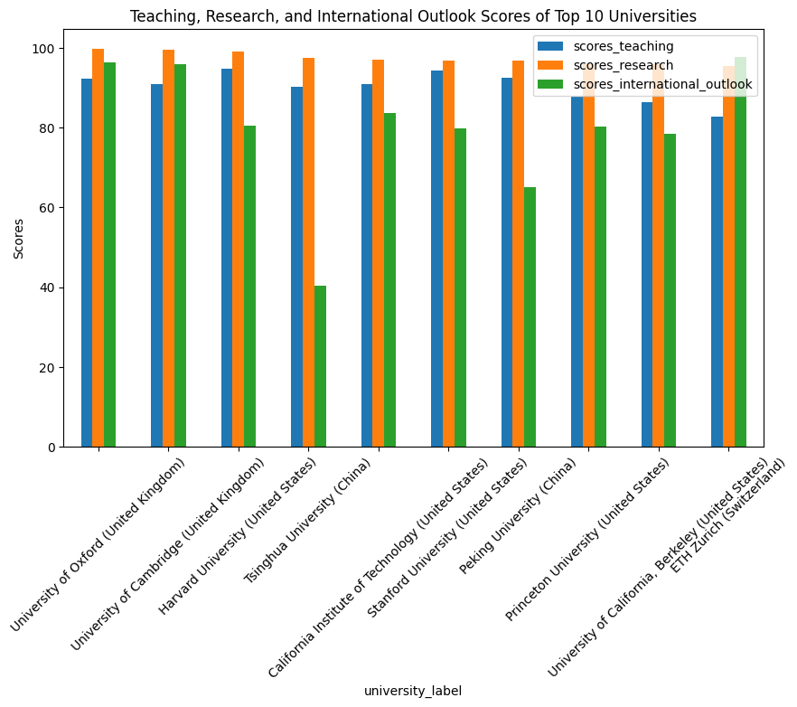
merged_data.columnsIndex(['rank_order', 'rank', 'name', 'scores_overall', 'scores_overall_rank',
'scores_teaching', 'scores_teaching_rank', 'scores_research',
'scores_research_rank', 'scores_citations', 'scores_citations_rank',
'scores_industry_income', 'scores_industry_income_rank',
'scores_international_outlook', 'scores_international_outlook_rank',
'record_type', 'member_level', 'url', 'nid', 'location',
'stats_number_students', 'stats_student_staff_ratio',
'stats_pc_intl_students', 'stats_female_male_ratio', 'aliases',
'subjects_offered', 'closed', 'unaccredited', 'disabled',
'Country Name', 'GDP (current US$)', 'GDP growth (annual %)',
'GDP per capita (current US$)', 'Inflation, consumer prices (annual %)',
'Population, total',
'Unemployment, total (% of total labor force) (national estimate)',
'Urban population (% of total population)', 'university_label'],
dtype='object')import seaborn as sns
# Create a scatter plot to show the relationship between research, citations, and overall ranking
plt.figure(figsize=(8,6))
sns.scatterplot(data=merged_data, x='scores_research', y='scores_citations', size='scores_overall', hue='scores_overall', palette='viridis', legend=False)
plt.title('Relationship Between Research Income, Citation Impact, and Overall University Ranking')
plt.xlabel('Research Score')
plt.ylabel('Citations Score')
plt.show()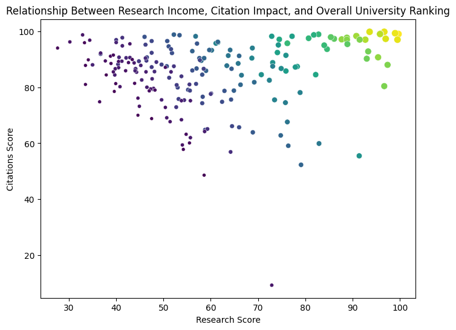
import plotly.graph_objects as go
selected_universities = merged_data[merged_data['rank'] <= 10]
fig_radar = go.Figure()
for _, row in selected_universities.iterrows():
university_label = f"{row['name']} (Rank: {row['rank']})"
fig_radar.add_trace(go.Scatterpolar(
r=[
row['scores_teaching'],
row['scores_research'],
row['scores_international_outlook'],
row['scores_teaching']
],
theta=['Teaching', 'Research', 'International Outlook', 'Teaching'],
fill='toself',
name=university_label
))
fig_radar.update_layout(
polar=dict(
radialaxis=dict(visible=True, range=[0, 100])
),
title='Comparison of Top Universities in Teaching, Research, and International Outlook'
)
fig_radar.show()Unable to display output for mime type(s): application/vnd.plotly.v1+json# Sort universities by industry income
df_sorted = merged_data[['name', 'scores_industry_income']].sort_values(by='scores_industry_income', ascending=False)
# Display the top universities
df_sorted.head(20)| name | scores_industry_income | |
|---|---|---|
| 32 | LMU Munich | 100.0 |
| 15 | Tsinghua University | 100.0 |
| 58 | Wageningen University & Research | 100.0 |
| 91 | Korea Advanced Institute of Science and Techno... | 100.0 |
| 51 | Shanghai Jiao Tong University | 100.0 |
| 66 | Zhejiang University | 100.0 |
| 29 | Technical University of Munich | 100.0 |
| 24 | Duke University | 99.6 |
| 41 | KU Leuven | 99.2 |
| 100 | University of Basel | 99.2 |
| 163 | Lomonosov Moscow State University | 99.1 |
| 171 | Sungkyunkwan University (SKKU) | 98.3 |
| 167 | Medical University of Graz | 98.1 |
| 55 | Seoul National University | 96.6 |
| 112 | University of Freiburg | 96.2 |
| 164 | Pohang University of Science and Technology (P... | 96.2 |
| 127 | University of Hamburg | 96.1 |
| 57 | The Hong Kong University of Science and Techno... | 95.0 |
| 77 | Yonsei University (Seoul campus) | 94.8 |
| 99 | RWTH Aachen University | 93.8 |
top_universities = merged_data.loc[merged_data.groupby('Country Name')['scores_overall_rank'].idxmin()]
result = top_universities[['Country Name', 'name', 'scores_overall_rank']]
result = result.sort_values(by='scores_overall_rank')
print(result) Country Name name \
0 United Kingdom University of Oxford
1 United States Harvard University
11 Switzerland ETH Zurich
15 China Tsinghua University
17 Canada University of Toronto
18 Singapore National University of Singapore
29 Germany Technical University of Munich
33 Australia University of Melbourne
38 Japan The University of Tokyo
41 Belgium KU Leuven
46 France Paris Sciences et Lettres – PSL Research Unive...
48 Sweden Karolinska Institute
58 Netherlands Wageningen University & Research
101 Saudi Arabia King Abdulaziz University
109 Finland University of Helsinki
113 Denmark University of Copenhagen
124 Austria University of Vienna
125 Norway University of Oslo
138 New Zealand University of Auckland
159 South Africa University of Cape Town
160 Italy University of Bologna
161 Ireland Trinity College Dublin
163 Russian Federation Lomonosov Moscow State University
181 Spain University of Barcelona
scores_overall_rank
0 10
1 20
11 120
15 160
17 180
18 190
29 300
33 340
38 390
41 420
46 470
48 490
58 590
101 1020
109 1100
113 1140
124 1250
125 1260
138 1390
159 1600
160 1610
161 1620
163 1640
181 1820 Which countries have the highest-ranked universities globally, showcasing the top institution from each nation?“ is important for several reasons:
Quality of Education: High-ranked universities often indicate high-quality education, research, and academic resources. This information can help students and researchers choose the best options for their studies or academic collaborations.
Attracting International Students: Countries with prestigious universities tend to be more attractive to international students. This can contribute to the economic and cultural growth of those countries.
Global Competitiveness: Comparing universities helps countries understand where they need to improve and how they can perform better in the global arena. This information can aid policymakers in implementing more effective educational policies.
Research and Innovation Development: Top universities are often leaders in research and innovation. This information can assist industries and governments in identifying strengths and collaboration opportunities in research.
Social and Economic Impact: Universities, as educational and research institutions, have a significant impact on the society and economy of countries. Identifying top universities can enhance understanding of their contributions to social and economic development.
Choosing Educational Paths: For students and parents, knowing the best universities can aid in decision-making regarding educational and career paths.
import plotly.express as px
import plotly.io as pio
from plotly.offline import init_notebook_mode, iplot
# انتخاب دانشگاههای با رنک پایینتر یا برابر با 45
best_universities = merged_data.loc[merged_data['rank'] <= 50]
# مرتبسازی بر اساس نمرات
best_universities_sorted = best_universities.sort_values(by='scores_overall', ascending=False)
# ساخت نمودار بار با استفاده از نمرات
fig = px.bar(
best_universities_sorted,
x='Country Name',
y='scores_overall', # تغییر به نمرات کلی
color='scores_overall', # رنگ بر اساس نمرات
title='Top-Ranked Universities by Country',
labels={'Country Name': 'Country Name', 'scores_overall': 'Overall Scores'},
text='name'
)
# نمایش نمودار
init_notebook_mode(connected=True)
iplot(fig)
Why is it important to identify which universities are the highest-ranked globally, representing the top institution in each country?
Global Education Landscape: Understanding the distribution of top-ranked universities helps to illuminate the global education landscape. It provides insights into which countries are excelling in higher education and research.
Educational Opportunities: Prospective students can make informed decisions about where to pursue their education based on university rankings, considering factors like academic reputation, research output, and international collaborations.
Policy and Investment Decisions: Governments and educational institutions can use this information to develop policies aimed at improving higher education. Identifying successful models can guide investment decisions and initiatives to bolster educational quality.
Cultural Exchange and Collaboration: Recognizing top institutions can encourage international partnerships and cultural exchanges, fostering a more interconnected global academic community.
Employment and Economic Impact: Universities are critical in shaping the workforce. Countries with highly-ranked universities often have a competitive advantage in attracting businesses and talent, which can contribute to economic growth.
import pandas as pd
import plotly.express as px
# Assuming 'merged_data' contains your data with 'Country Name', 'rank', and 'name' columns
# Filter to get the highest-ranked university for each country
highest_ranked_universities = merged_data.loc[merged_data.groupby('Country Name')['rank'].idxmin()]
# Create a map visualization
fig = px.choropleth(
highest_ranked_universities,
locations='Country Name',
locationmode='country names',
color='rank',
hover_name='name', # Show university name on hover
color_continuous_scale=px.colors.sequential.Plasma,
title='Highest-Ranked Universities by Country',
labels={'rank': 'University Rank'},
)
# Show the figure
#fig.show()
init_notebook_mode(connected=True)
iplot(fig)# Define GDP per capita categories
merged_data['GDP per Capita Category'] = pd.cut(
merged_data['GDP per capita (current US$)'],
bins=[0, 1000, 5000, 10000, 20000, 50000, float('inf')],
labels=['Low', 'Lower-Middle', 'Upper-Middle', 'High', 'Very High', 'Ultra High']
)
fig = px.box(
merged_data,
x='GDP per Capita Category',
y='scores_overall_rank',
title='University Rank Distribution by GDP Per Capita Category',
labels={'GDP per Capita Category': 'GDP Per Capita Category', 'scores_overall_rank': 'University Rank'}
)
#fig.show()
init_notebook_mode(connected=True)
iplot(fig)a heatmap to show the correlation between different economic factors (GDP, GDP growth, etc.) and university rankings. Interpretation: This can help identify which economic factors have the strongest relationships with university rankings. For instance, a strong positive correlation between GDP and university rankings could suggest that economic strength contributes to better education systems.
import seaborn as sns
import matplotlib.pyplot as plt
# Calculate the correlation matrix
correlation_matrix = merged_data[['GDP (current US$)', 'GDP per capita (current US$)', 'scores_overall_rank', 'scores_research_rank', 'scores_teaching_rank', 'scores_international_outlook_rank']].corr()
plt.figure(figsize=(10, 8))
sns.heatmap(correlation_matrix, annot=True, cmap='coolwarm', fmt='.2f')
plt.title('Correlation Heatmap of Economic Factors and University Rankings')
plt.show()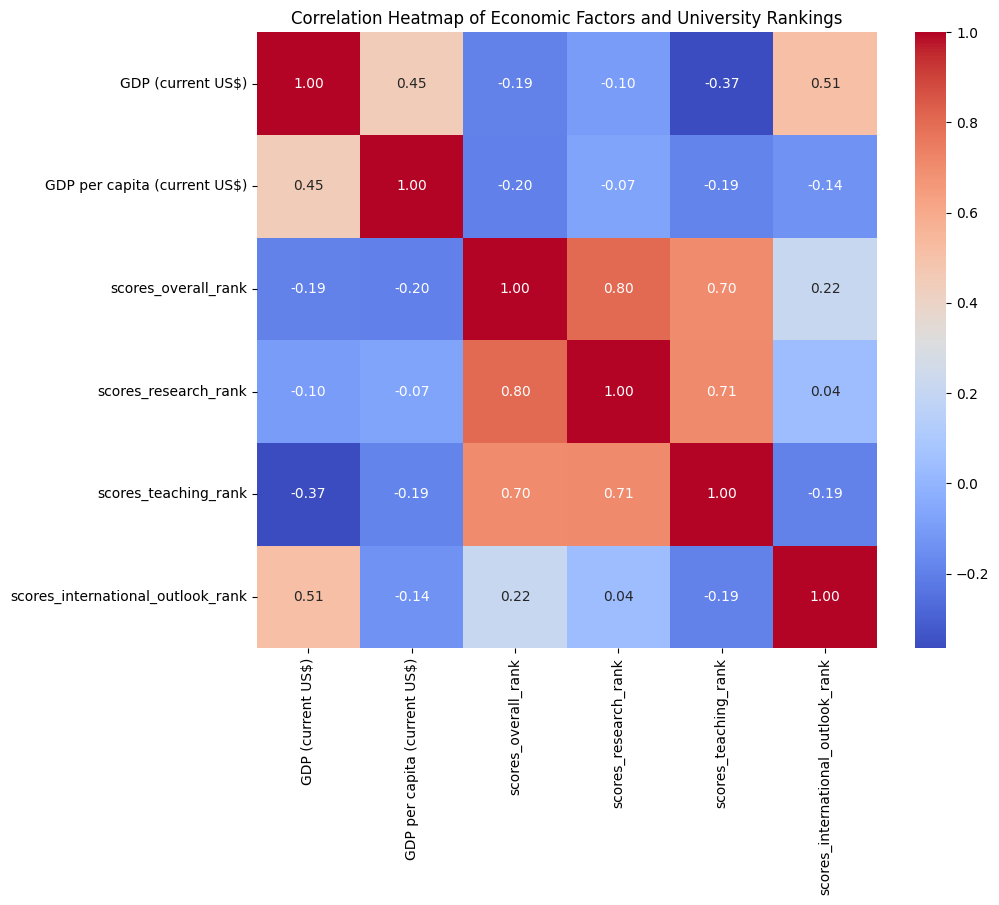
Economic Factors Influence Rankings: Higher GDP and GDP per capita are often correlated with better university rankings, suggesting that wealthier nations invest more in education. Outliers and Exceptions: It’s important to identify countries that may have high-ranking universities despite lower GDPs, which may indicate other factors at play, such as government investment in education or historical legacies. Regional Trends: These visualizations may help identify geographic trends in education quality related to economic performance.
Main Story,The Interplay Between Economic Performance and Higher Education Quality”
This narrative explores how economic indicators such as GDP, GDP growth, and population demographics correlate with the rankings and performance of universities across different countries. By analyzing these relationships, we can gain insights into how nations invest in education and the resulting impact on their higher education systems.
What is the relationship between GDP and university rankings?
Visualization: Scatter Plot Description: Plot GDP (current US$) against overall university rank. Insights: Investigate whether higher GDP correlates with higher-ranked universities.
fig = px.scatter(
merged_data,
x='GDP (current US$)',
y='scores_overall_rank',
color='Country Name',
title='GDP vs. Overall University Rank',
labels={'GDP (current US$)': 'GDP (Current US$)', 'scores_overall_rank': 'University Rank'},
hover_name='Country Name',
log_x=True,
log_y=True
)
#fig.show()
init_notebook_mode(connected=True)
iplot(fig)How do teaching and research scores vary by country?
Visualization: Box Plot Description: Show the distribution of teaching and research scores across different countries. Insights: Identify which countries excel in teaching vs. research.
fig = px.box(
merged_data,
x='Country Name',
y='scores_teaching',
title='Distribution of Teaching Scores by Country',
labels={'Country Name': 'Country', 'scores_teaching': 'Teaching Scores'},
color='Country Name'
)
#fig.show()
init_notebook_mode(connected=True)
iplot(fig)Which countries have the best international outlook in their universities?
Visualization: Bar Chart Description: Rank countries by their average scores in international outlook. Insights: Highlight global educational hubs that attract international students and faculty.
avg_international_outlook = merged_data.groupby('Country Name')['scores_international_outlook'].mean().reset_index()
fig = px.bar(
avg_international_outlook,
x='Country Name',
y='scores_international_outlook',
title='Average International Outlook Scores by Country',
labels={'Country Name': 'Country', 'scores_international_outlook': 'Average International Outlook Score'}
)
#fig.show()
init_notebook_mode(connected=True)
iplot(fig)How do university rankings differ between countries with different GDP growth rates?
Visualization: Violin Plot Description: Show the distribution of university ranks across different GDP growth categories. Insights: Assess how economic growth impacts educational quality and university performance.
merged_data['GDP Growth Category'] = pd.cut(
merged_data['GDP growth (annual %)'],
bins=[-float('inf'), 0, 2, 5, 10, float('inf')],
labels=['Negative Growth', 'Low Growth', 'Moderate Growth', 'High Growth', 'Very High Growth']
)
fig = px.violin(
merged_data,
x='GDP Growth Category',
y='scores_overall_rank',
title='University Rankings by GDP Growth Rate',
labels={'GDP Growth Category': 'GDP Growth Rate Category', 'scores_overall_rank': 'University Rank'}
)
#fig.show()
init_notebook_mode(connected=True)
iplot(fig)What is the impact of student-to-staff ratios on university rankings?
Visualization: Scatter Plot Description: Plot student-to-staff ratios against overall university ranks. Insights: Investigate whether better staff-to-student ratios lead to higher academic performance.
fig = px.scatter(
merged_data,
x='stats_student_staff_ratio',
y='scores_overall_rank',
color='Country Name',
title='Student-Staff Ratio vs. University Rank',
labels={'stats_student_staff_ratio': 'Student-Staff Ratio', 'scores_overall_rank': 'University Rank'}
)
#fig.show()
init_notebook_mode(connected=True)
iplot(fig)How does the urban population correlate with university performance?
Visualization: Heatmap Description: Display the correlation between urban population percentage and university scores. Insights: Explore whether urban areas, which might have better resources, lead to better-performing universities.
correlation_matrix = merged_data[['Urban population (% of total population)', 'scores_overall_rank', 'scores_teaching', 'scores_research']].corr()
plt.figure(figsize=(8, 6))
sns.heatmap(correlation_matrix, annot=True, cmap='coolwarm')
plt.title('Correlation Heatmap of Urban Population and University Performance')
plt.show()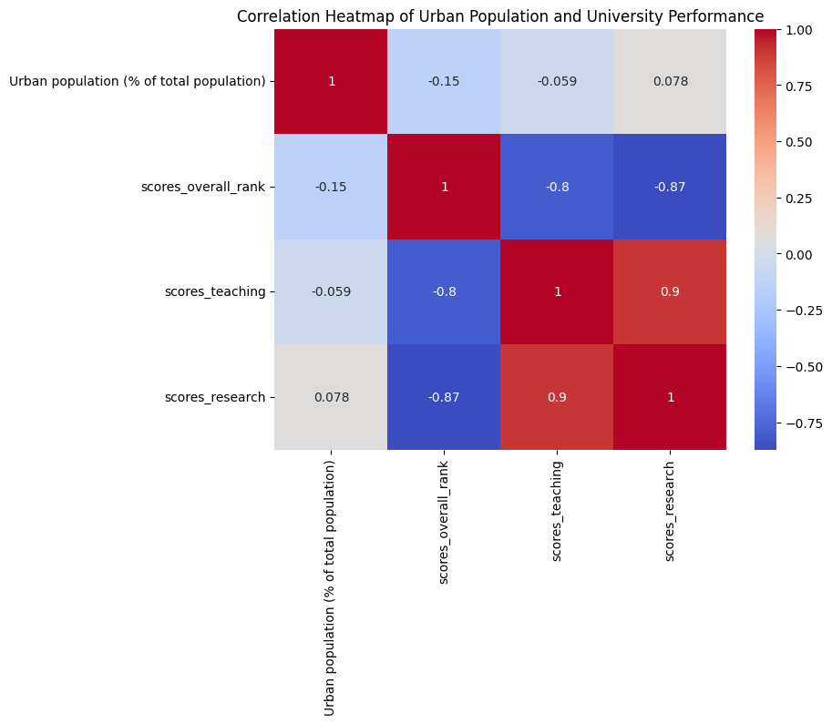
How do gender ratios in student populations affect university rankings?
Visualization: Bar Chart Description: Compare average university ranks based on female-to-male ratios. Insights: Investigate gender diversity in education and its potential impact on university performance.
fig = px.bar(
merged_data,
x='stats_female_male_ratio',
y='scores_overall_rank',
title='University Rank by Female-to-Male Ratio',
labels={'stats_female_male_ratio': 'Female-to-Male Ratio', 'scores_overall_rank': 'University Rank'}
)
#fig.show()
init_notebook_mode(connected=True)
iplot(fig)The Times Higher Education World University Rankings are the only global performance tables that judge research-intensive universities across all their core missions: teaching, research, knowledge transfer and international outlook. We use 13 carefully calibrated performance indicators to provide the most comprehensive and balanced comparisons, trusted by students, academics, university leaders, industry and governments.
The performance indicators are grouped into five areas: Teaching (the learning environment); Research (volume, income and reputation); Citations (research influence); International outlook (staff, students and research); and Industry income (knowledge transfer).
import matplotlib.pyplot as plt
import seaborn as sns
# Sort universities by overall research scores and select top 10
# Combine university names with their locations and ranks
merged_data['university_label'] = ' (' + merged_data['location'] + merged_data['rank'].astype(str) + ')'
merged_data_1 = merged_data[['university_label', 'scores_teaching', 'scores_research', 'scores_international_outlook']].sort_values(by='scores_research', ascending=False).head(10)
# Create a bar chart for top 10 universities
merged_data_1.set_index('university_label').plot(kind='bar', figsize=(10, 6))
plt.title('Teaching, Research, and International Outlook Scores of Top 10 Universities')
plt.ylabel('Scores')
plt.xticks(rotation=45)
plt.show()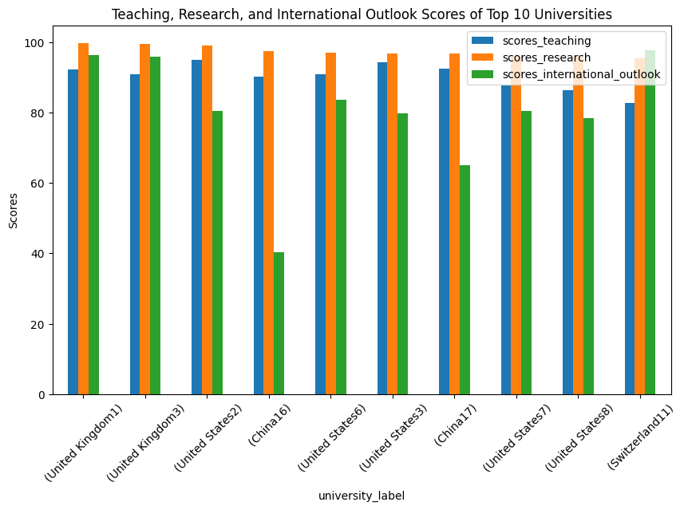
import pandas as pd
import matplotlib.pyplot as plt
top_universities_count = merged_data[merged_data['rank'] <= 100].groupby('Country Name').size()
average_scores = merged_data[merged_data['rank'] <= 100].groupby('Country Name')['scores_overall'].mean()
result = pd.DataFrame({
'Top Universities Count': top_universities_count,
'Average Score': average_scores
}).fillna(0)
result = result.sort_values(by='Top Universities Count', ascending=False)
fig, ax1 = plt.subplots(figsize=(12, 6))
ax1.bar(result.index, result['Top Universities Count'], color='b', alpha=0.6, label='Top Universities Count')
ax1.set_ylabel('Top Universities Count', color='b')
ax1.tick_params(axis='y', labelcolor='b')
ax1.set_xticklabels(result.index, rotation=45)
ax2 = ax1.twinx()
ax2.plot(result.index, result['Average Score'], color='r', marker='o', label='Average Score')
ax2.set_ylabel('Average Score', color='r')
ax2.tick_params(axis='y', labelcolor='r')
plt.title('Top Universities and Average Scores by Country')
plt.show()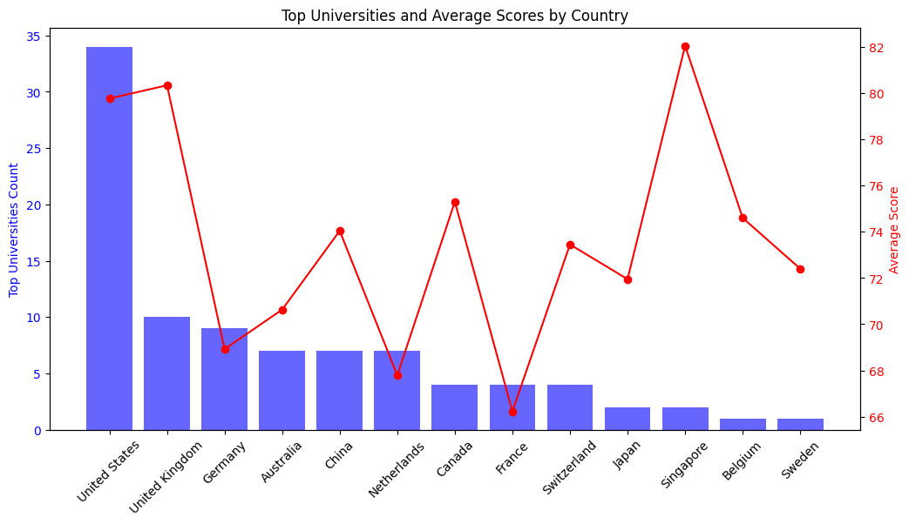
The countries with the highest number of top universities provide us with the chance to choose universities with high rankings. Also, the average scores of universities can help us evaluate the quality of education and research in that country.
import matplotlib.pyplot as plt
import seaborn as sns
# Sort universities by overall scores (you can change 'scores_overall' to the column you want)
merged_data_1 = merged_data[['name', 'location', 'rank', 'scores_teaching', 'scores_research', 'scores_international_outlook']].sort_values(by='rank').head(10)
# Combine university names with their locations and ranks
merged_data_1['university_label'] = merged_data_1['name'] + ' (' + merged_data_1['location'] + ', Rank: ' + merged_data_1['rank'].astype(str) + ')'
# Create a bar chart for top 10 universities
merged_data_1.set_index('university_label').plot(kind='bar', figsize=(10, 6))
plt.title('Teaching, Research, and International Outlook Scores of Top 10 Universities')
plt.ylabel('Scores')
plt.xticks(rotation=45)
plt.show()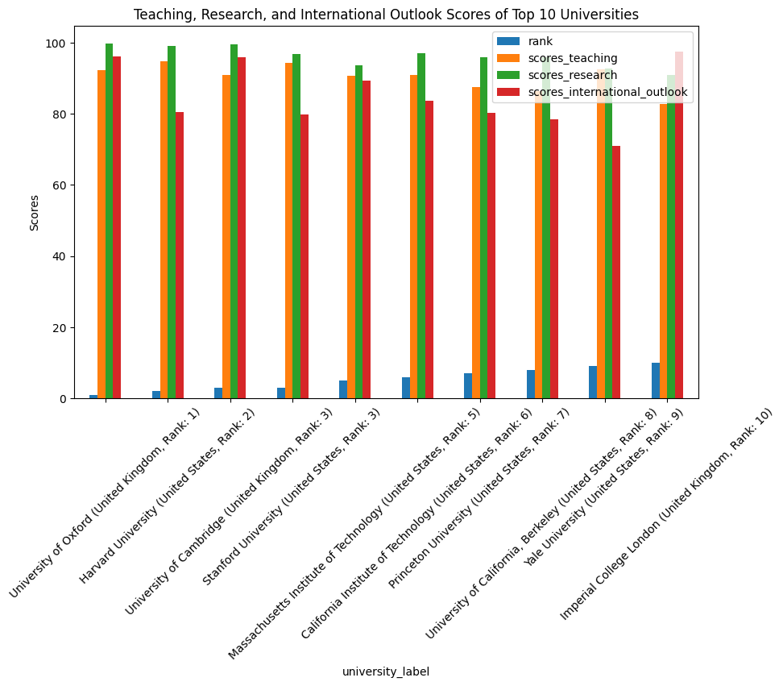
print(merged_data['rank'].dtype)int64import plotly.express as px
top_universities = merged_data[merged_data['rank'] <= 100]
fig = px.bar(
top_universities,
x='Country Name',
y='rank',
color='rank',
title='Top-Ranked Universities by Country',
text='name'
)
fig.show()fig = px.scatter(
merged_data,
x='GDP per capita (current US$)',
y='rank',
color='Country Name',
title='Relationship Between GDP per Capita and University Rank',
hover_name='name',
log_x=True
)
fig.show()Countries such as the United States and Switzerland with high GDP per capita typically have highly ranked universities, indicating high financial resources and significant investment in research and education. On the contrary, countries like China with lower GDP per capita also have high-ranking universities, which can indicate strategic policies and investments in the field of education and research.
import plotly.graph_objects as go
selected_universities = merged_data[merged_data['rank'] <= 10]
fig_radar = go.Figure()
for _, row in selected_universities.iterrows():
university_label = f"{row['name']} (Rank: {row['rank']})"
fig_radar.add_trace(go.Scatterpolar(
r=[
row['scores_teaching'],
row['scores_research'],
row['scores_international_outlook'],
row['scores_teaching']
],
theta=['Teaching', 'Research', 'International Outlook', 'Teaching'],
fill='toself',
name=university_label
))
fig_radar.update_layout(
polar=dict(
radialaxis=dict(visible=True, range=[0, 100])
),
title='Comparison of Top Universities in Teaching, Research, and International Outlook'
)
fig_radar.show()fig = px.scatter(
merged_data,
x='Population, total',
y='rank',
color='Country Name',
title='Relationship Between Population and University Rank',
hover_name='name'
)
fig.show()# شناسایی و نمایش نتایج غیرمنتظره با توضیحات
outliers = merged_data[(merged_data['rank'] < 50) & (merged_data['GDP per capita (current US$)'] < 20000)]
print("Surprising universities:", outliers[['name', 'rank', 'GDP per capita (current US$)']])Surprising universities: name rank GDP per capita (current US$)
15 Tsinghua University 16 12614.06099
16 Peking University 17 12614.06099Discovery of correlation between GDP and university performance
correlation = merged_data['Population, total'].corr(merged_data['rank'])
print(f'Correlation between GDP and University Scores: {correlation}')Correlation between GDP and University Scores: -0.07994891118477053correlation = merged_data['Urban population (% of total population)'].corr(merged_data['rank'])
print(f'Correlation between Urban population (% of total population) and University Scores: {correlation}')Correlation between Urban population (% of total population) and University Scores: -0.14938145756908017Objective: To identify the universities that have the best overall performance and maintain their position among the top universities.
import plotly.express as px
top_universities = merged_data.sort_values(by='scores_overall_rank').head(10)
fig = px.bar(
top_universities,
x='scores_overall',
y='name',
orientation='h',
title='Top Universities by Overall Score',
labels={'scores_overall': 'Overall Score', 'name': 'University Name'},
text='rank'
)
fig.show()Objective: To investigate which universities are more successful in educational and research aspects and what is the reason for their success.
import plotly.express as px
import pandas as pd
top_universities = merged_data.sort_values(by='scores_teaching_rank').head(10)
top_universities['name_with_rank'] = top_universities['name'] + ' (Rank: ' + top_universities['scores_teaching_rank'].astype(str) + ')'
data_melted = pd.melt(top_universities, id_vars=['name_with_rank'],
value_vars=['scores_teaching', 'scores_research'],
var_name='Metric', value_name='Score')
fig = px.bar(
data_melted,
x='name_with_rank',
y='Score',
color='Metric',
barmode='group',
title='Comparison of Teaching and Research Scores for Top Universities',
labels={'name_with_rank': 'University (Rank)', 'Score': 'Score'}
)
fig.show()
Objective: To analyze the ability of universities to attract investment and generate income from cooperation with industries.
Understanding the analysis of universities’ ability to attract investment and generate revenue through industry partnerships can have several important implications:
Strengthening University Financial Policies: Universities that excel in attracting industry investment can serve as models for others. This can help universities improve their strategies for securing funding and fostering partnerships with industries.
Enhancing Industry-University Collaborations: This analysis highlights which universities have successfully established sustainable and effective partnerships with industries. Identifying these universities can inspire similar collaborations for other institutions and industries.
Increasing Employment and Research Opportunities: Universities with higher industrial investment often have more research projects, providing students and researchers with greater opportunities for work and skill development.
Talent Attraction: Universities that attract more industrial investment typically offer better research and educational facilities. This can draw in more talented students and faculty members.
International Competitiveness: Universities that are more successful in securing industry funding can achieve a stronger position in global competition and enhance their institutional reputation.
Regional and National Economic Development: Universities that maintain strong partnerships with industries can contribute to the economic growth of their region and country. These collaborations can foster innovation and facilitate the transfer of knowledge between academia and industry.
Overall, this analysis can guide strategic decision-making in university management, government policy in higher education, and economic development efforts.
import plotly.express as px
top_industry_income_universities = merged_data.sort_values(by='scores_industry_income_rank').head(10)
top_industry_income_universities['name_with_rank'] = top_industry_income_universities['name'] + ' (Rank: ' + top_industry_income_universities['scores_industry_income_rank'].astype(str) + ')'
fig = px.bar(
top_industry_income_universities,
x='name_with_rank',
y='scores_industry_income',
title='Top Universities by Industry Income Score',
labels={'name_with_rank': 'University (Rank)', 'scores_industry_income': 'Industry Income Score'},
color='name_with_rank'
)
fig.update_layout(xaxis_title='University (Rank)', yaxis_title='Industry Income Score')
fig.show()Objective: To understand the relationship between the national economy and the ranking of universities, which can indicate the importance of government investment in higher education.
import pandas as pd
# Check for missing values
print(merged_data[['Country Name', 'GDP (current US$)', 'rank']].isnull().sum())
# Drop rows with missing GDP or rank values
merged_data = merged_data.dropna(subset=['GDP (current US$)', 'rank'])
# Convert GDP to numeric if it's not already
merged_data['GDP (current US$)'] = pd.to_numeric(merged_data['GDP (current US$)'], errors='coerce')Country Name 12
GDP (current US$) 12
rank 0
dtype: int64# Calculate the correlation coefficient
correlation = merged_data['GDP (current US$)'].corr(merged_data['rank'])
print("Correlation coefficient between GDP and university rankings:", correlation)Correlation coefficient between GDP and university rankings: -0.19226949280550504Weak Negative Correlation: A correlation coefficient close to The correlation coefficient of approximately −0.19 indicates a weak negative relationship between GDP and university rankings. and it indicat that changes in GDP are not strongly linked to changes in university rankings.indicating that changes in GDP are not strongly linked to changes in university rankings.
import matplotlib.pyplot as plt
plt.figure(figsize=(10, 6))
plt.scatter(merged_data['GDP (current US$)'], merged_data['rank'], alpha=0.7)
plt.title('Relationship Between GDP and University Rankings')
plt.xlabel('Gross Domestic Product (US$)')
plt.ylabel('University Rankings')
plt.gca().invert_yaxis() # Invert y-axis to show better rankings at the top
plt.grid()
plt.show()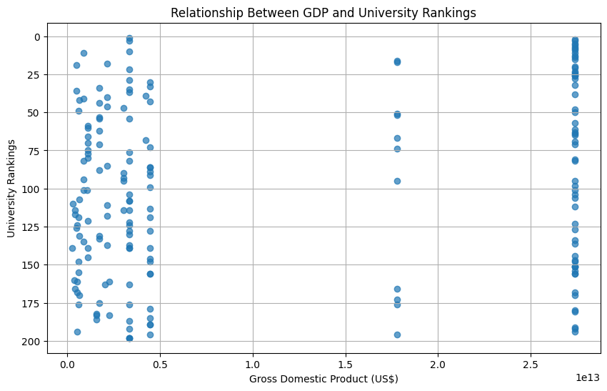
Objective: To investigate whether countries with high economic growth have better universities or not.
plt.figure(figsize=(10, 6))
plt.scatter(merged_data['GDP growth (annual %)'], merged_data['rank'], alpha=0.7)
plt.title('Relationship Between Economic Growth and University Rankings')
plt.xlabel('GDP Growth (Annual %)')
plt.ylabel('University Rankings')
plt.gca().invert_yaxis()
plt.grid()
plt.show()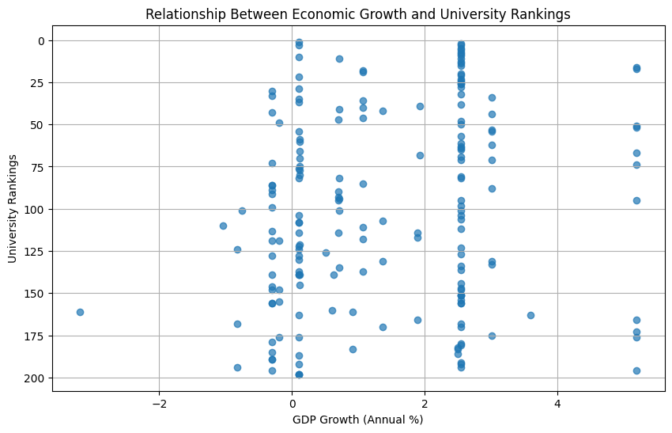
Objective: To analyze whether high unemployment has an effect on the performance and ranking of universities or not.
plt.figure(figsize=(10, 6))
plt.scatter(merged_data['Unemployment, total (% of total labor force) (national estimate)'], merged_data['rank'], alpha=0.7)
plt.title('Impact of Unemployment on University Rankings')
plt.xlabel('Unemployment Rate (% of Total Labor Force)')
plt.ylabel('University Rankings')
plt.gca().invert_yaxis()
plt.grid()
plt.show()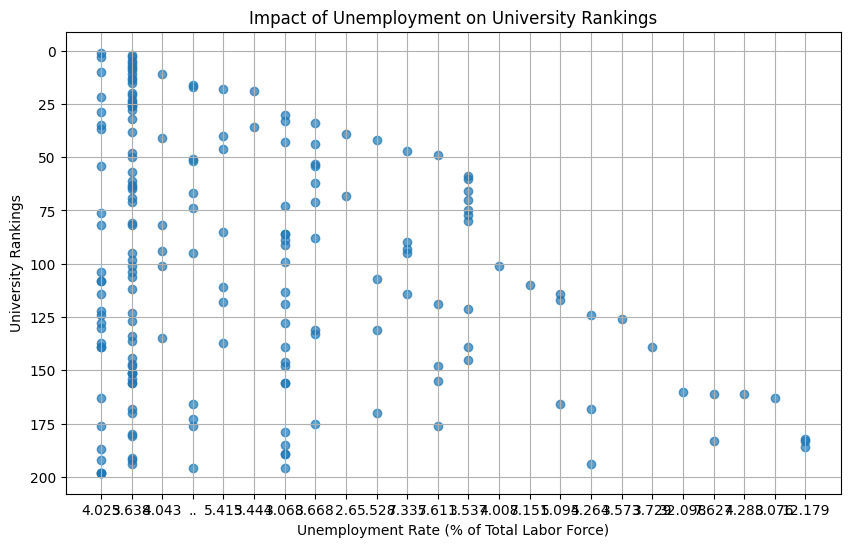
الف. ارتباط تعداد دانشجویان با رتبه دانشگاهها نمودار: نمودار پراکنده
plt.figure(figsize=(10, 6))
plt.scatter(merged_data['stats_number_students'], merged_data['rank'], alpha=0.7)
plt.title('Relationship Between Number of Students and University Rankings')
plt.xlabel('Number of Students')
plt.ylabel('University Rankings')
plt.gca().invert_yaxis()
plt.xticks([0, 10, 20, 30, 40])
plt.grid()
plt.show()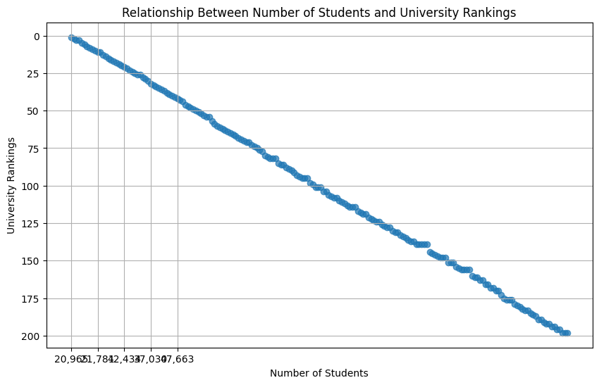
ب. تأثیر نسبت دانشجو به استاد بر رتبهبندی نمودار: نمودار پراکنده
plt.figure(figsize=(10, 6))
plt.scatter(merged_data['stats_student_staff_ratio'], merged_data['rank'], alpha=0.7)
plt.title('Impact of Student to Staff Ratio on University Rankings')
plt.xlabel('Student to Staff Ratio')
plt.ylabel('University Rankings')
plt.gca().invert_yaxis()
plt.grid()
plt.show()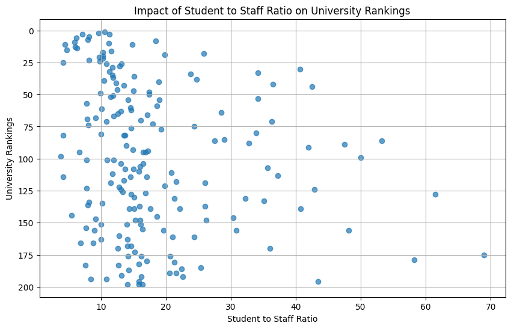
Objective: To understand how different universities have been able to attract international students and what effect it has on their ranking.
plt.figure(figsize=(10, 6))
plt.bar(merged_data['Country Name'], merged_data['stats_pc_intl_students'], alpha=0.7)
plt.title('Distribution of International Students by University')
plt.xlabel('Country Name')
plt.ylabel('Percentage of International Students')
plt.xticks(rotation=90)
plt.yticks([0, 10, 20, 30, 40])
plt.grid(axis='y')
plt.show()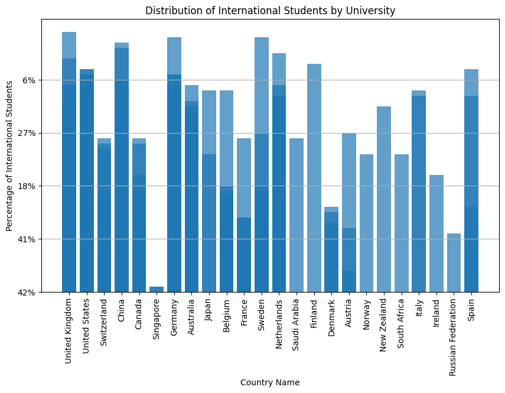
This chart shows the percentage of international students at universities in various countries. The vertical axis represents the percentage of international students, while the horizontal axis lists the names of countries with universities included in this data.
Key points in interpreting this chart:
Differences in percentages: It appears that countries like the United Kingdom, Switzerland, and Australia have a high percentage of international students. This may be due to the high quality of education and the appeal of these countries for foreign students.
Lower percentages in some countries: Countries like Canada, Saudi Arabia, and Northern European nations have a lower percentage of international students. This could be due to various factors, such as immigration policies, the language of instruction, and living costs.
Geographic diversity: A variety of countries from different continents are represented in this chart. This diversity reflects the interest of international students in studying in various countries, though some regions, like the UK and Australia, seem to be more attractive.
Overall, this chart highlights the appeal of different countries for international students and the relative distribution of international students in universities across these countries.
The results of our analysis show that there is no direct and strong relationship between GDP per capita and the ranking of universities. For example, country X with the same GDP as country Y has different university rankings. This means that other factors such as the quality of education, investment in research, and the educational system should also be considered. It is recommended to focus on better results in the ranking of global categories to improve the quality of education and scientific research, instead of only on GDP.
2.5 4. Social and economic characteristics of universities
2.5.1 Question: In which countries are the leading universities located and why?
Objective: To identify the countries with the best universities and examine the economic and social indicators that contribute to their success.(Sort the data by GDP per capita in descending order)
Code
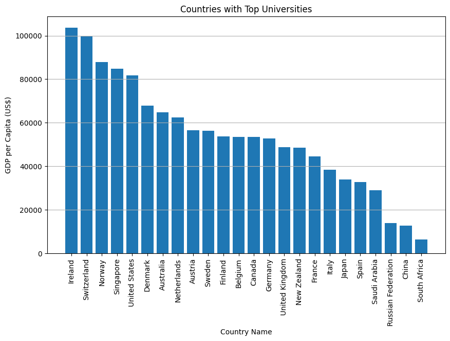
2.5.2 Question: Which universities have surpassed their peers in the overall ranking?
Objective: To identify the universities that performed better than others in the rankings and their possible reasons.
Code
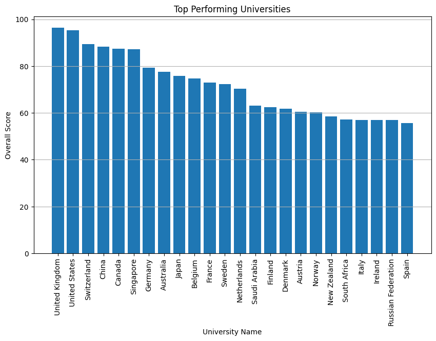
Code
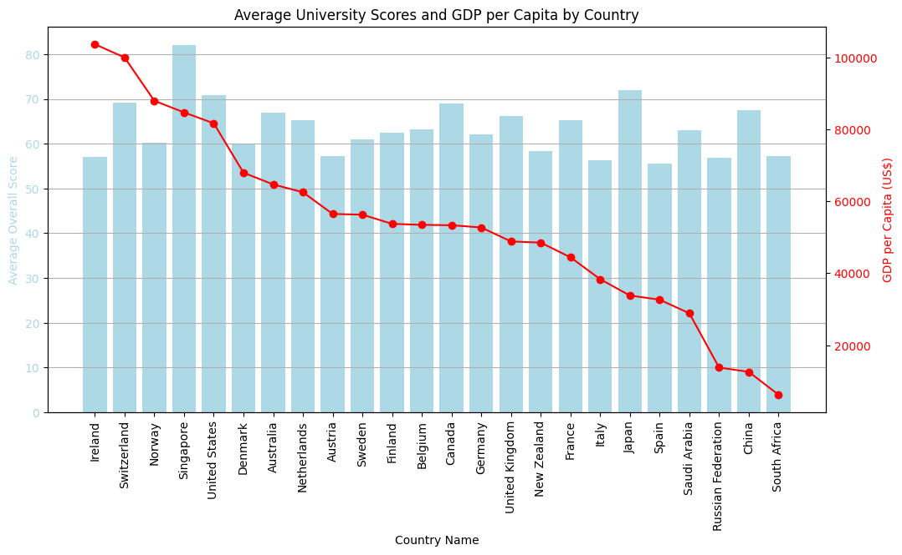
Code
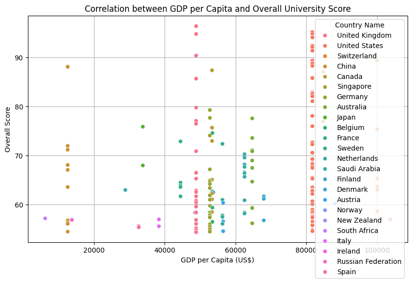